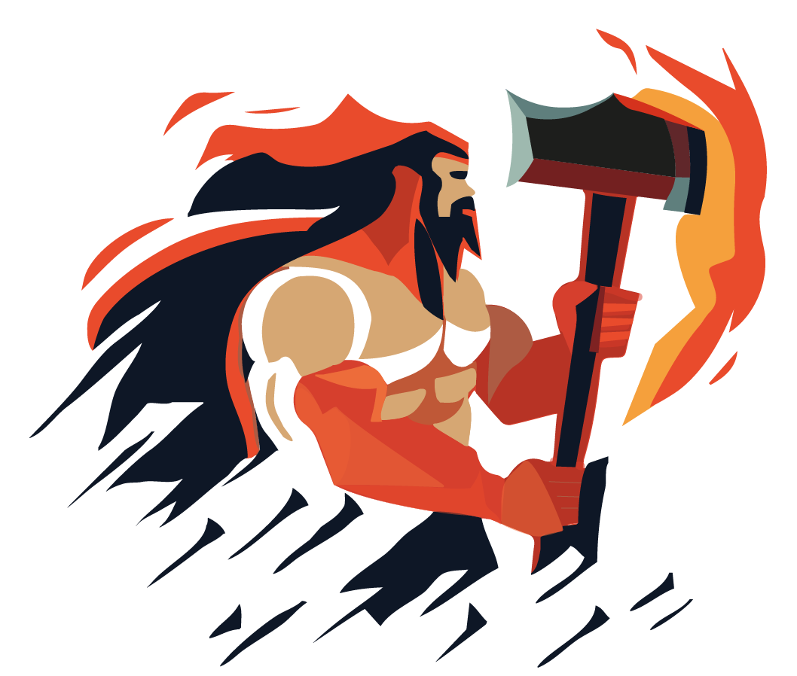

La marque Hephaistox

Qu'est-ce qu'Hephaistox?
Hephaistos est un Dieu grec, il a été une inspiration pour les premières industries il y a des milliers d’années, comme le Dieu des solutions faites sur mesures, un Dieu de l’artisanat dont les produits sont d’une grande valeur, qui résiste au temps. Un Dieu de l’automatisation et des solutions innovantes.
Ainsi, nous avons nommé notre entreprise en son honneur, et nous avons choisis son nom que nous avons mélangé avec la lettre x, qui signifie la flexibilité, la croissance et l’inclusion.
Nous préférons les solutions longs termes, en priorisant la qualité et la fiabilité de nos produits.
Priorité à la coopération locale
Notre objectif est de fournir des solutions de haut niveau à des petites et moyennes industries. Nous visons ces entreprises car nous croyons fermement que la force et l’auto suffisance de l’Europe réside dans ses entreprises locales. Nous sommes engagés à offrir à ces entreprises des solutions qui sont souvent réservées aux grandes entreprises.
Aider à la croissance des entreprises locales bénéficie aussi à toutes les entreprises du marché local
Pas de foutaises
Beaucoup d’entreprises affichent de grandes vertus mais peu les suivent réellement.
Nous respectons nos promesses, et pour chaque valeur affichée sur cette page nous menons des actions concrètes pour les rendre réelles.
Nous ne croyons pas les grands mots et les concepts fumeux, c’est pourquoi nous parlerons avec vous de faits et de choses possibles.
Partage de connaissance
Nous sommes engagés à partager nos connaissances pour favoriser croissance et innovations de tous.
La plus grande partie de notre travail est publique, en publiant des articles, conférences dans des événements et en rendant open source la plupart de notre code.
Nous sommes heureux de permettre la collaboration et d’accélérer la compréhension commune de la chaîne logistique, du business et de l’informatique.
Transparence et confiance
Nous accordons de la valeur à la transparence et à la confiance, c’est pourquoi dès le début de notre travail ensemble, nous voulons être clair sur les coûts et valeurs attendues en retour à chaque étape du projet.
La culture du retour d’information
Nous sommes toujours contents de donner et recevoir des retours d’information. Nous croyons que les retours d’informations sont les pierres angulaires de l’amélioration.
Croissance
Nous croyons que la croissance d’une entreprise est liée à la croissance des personnes qui la compose. Ce qui se reflète aussi sur la qualité de ses produits et services. C’est pourquoi nous nous assurons d’avoir du temps pour faire croître nos connaissances et de mettre en place des objectifs qui sont à la fois pour l’ensemble de l’entreprise et pour chacun.
Agile manifesto
Nous approuvons le manifeste agile. Les extraits suivants feront sens pour nos clients :
- Notre plus haute priorité est de satisfaire le client en livrant rapidement et régulièrement des fonctionnalités à grande valeur ajoutée.
- Accueillez positivement les changements de besoins, même tard dans le projet. Les processus Agiles exploitent le changement pour donner un avantage compétitif au client.
- Livrez fréquemment un logiciel opérationnel avec des cycles de quelques semaines à quelques mois et une préférence pour les plus courts.
- Les utilisateurs ou leurs représentants et les développeurs doivent travailler ensemble quotidiennement tout au long du projet.
- Un logiciel opérationnel est la principale mesure d’avancement.
- Les processus Agiles encouragent un rythme de développement soutenable. Ensemble, les commanditaires, les développeurs et les utilisateurs devraient être capables de maintenir indéfiniment un rythme constant.
- Une attention continue à l'excellence technique et à une bonne conception renforce l’Agilité.
- La simplicité – c’est-à-dire l’art de minimiser la quantité de travail inutile – est essentielle.